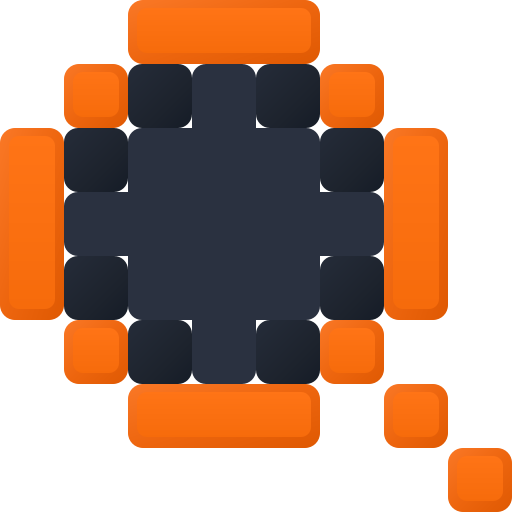
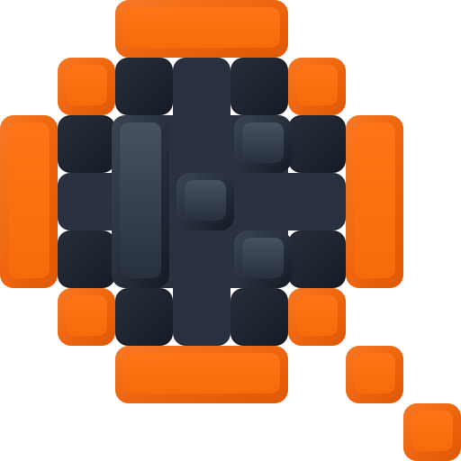
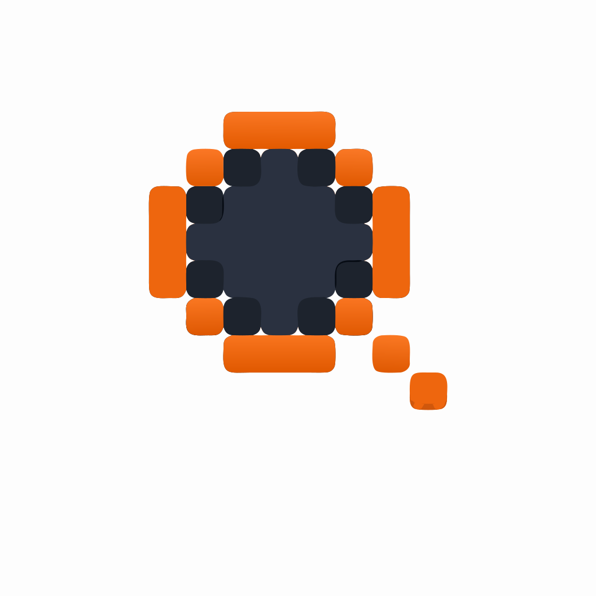

Merged tightOrange
Accepted responsive logo system
One silhouette, two optical treatments selected by rendered size and context.

App icons, tray icons, favicons, result rows, and UI marks.
Default at 64px and below

README headers, splash screens, setup, websites, and documentation heroes.
Default at 96px and above
Source / reconstruction
The source is cropped to its exact 512×512 logical mark. Both sides use the same visual box.

Exact requested all-orange variants
Both use full-cell rounded orange blocks identical in size and treatment to the logo’s existing orange squares.
Full three-cell stem; full center, top-right, and bottom-right blocks.
Center, top-right, and bottom-right—no stem or additional marks.
Exact-shape spacing and color wall · 6×6
All blocks stay full-cell size. Rows change optical spacing only; columns compare orange, subtle dark grays, warm gray, and two mixed treatments.
Merged tightSoft gray
Merged tightGraphite
Merged tightWarm gray
Merged tightOrange / gray
Merged tightGray / orange
Merged balancedOrange
Merged balancedSoft gray
Merged balancedGraphite
Merged balancedWarm gray
Merged balancedOrange / gray
Merged balancedGray / orange
Merged openOrange
Merged openSoft gray
Merged openGraphite
Merged openWarm gray
Merged openOrange / gray
Merged openGray / orange
Three tightOrange
Three tightSoft gray
Three tightGraphite
Three tightWarm gray
Three tightOrange / gray
Three tightGray / orange
Three balancedOrange
Three balancedSoft gray
Three balancedGraphite
Three balancedWarm gray
Three balancedOrange / gray
Three balancedGray / orange
Three openOrange
Three openSoft gray
Three openGraphite
Three openWarm gray
Three openOrange / gray
Three openGray / orange
Five-dot K experiments
Three dots form the vertical stem. Top-right and bottom-right dots imply the two arms without drawing diagonal bars.
Source geometry
The untouched 8×8 reconstruction, retained as the comparison baseline.
· · ·· · ·
· · ·
Orange five-dot K
Brand-orange stem and tips. This is the direct version of the requested construction.
● · ●● · ·
● · ●
Dark-square K
Deep ink dots over a lighter slate center for a quieter, embossed-looking monogram.
■ · ■■ · ·
■ · ■
Three-color K
Orange stem, aqua arm tips, and the existing slate field—an intentionally more expressive option.
● · ◆● · ·
● · ◆
K construction wall · 6×6
Every treatment includes the solitary center joint. Rows compare merged and pixel stems; columns restore monochrome and explicit three-color combinations.
Merged fullOrange
Merged fullDeep ink
Merged fullOrange / aqua
Merged fullOrange / amber
Merged fullAmber / orange
Merged fullAqua / orange
Merged narrowOrange
Merged narrowDeep ink
Merged narrowOrange / aqua
Merged narrowOrange / amber
Merged narrowAmber / orange
Merged narrowAqua / orange
Pixels largeOrange
Pixels largeDeep ink
Pixels largeOrange / aqua
Pixels largeOrange / amber
Pixels largeAmber / orange
Pixels largeAqua / orange
Pixels smallOrange
Pixels smallDeep ink
Pixels smallOrange / aqua
Pixels smallOrange / amber
Pixels smallAmber / orange
Pixels smallAqua / orange
Pixels linkedOrange
Pixels linkedDeep ink
Pixels linkedOrange / aqua
Pixels linkedOrange / amber
Pixels linkedAmber / orange
Pixels linkedAqua / orange
Merged centeredOrange
Merged centeredDeep ink
Merged centeredOrange / aqua
Merged centeredOrange / amber
Merged centeredAmber / orange
Merged centeredAqua / orange
Alignment audit
Blend the source beneath the CSS reconstruction or expose the exact 8×8 grid.
Light-context size test
Reference on the left; HTML/CSS on the right at every size.
Dark-context size test
The white square belongs to the supplied presentation; the reconstructed product mark remains transparent.
Construction record
Exact occupancy
1 2 3 4 5 6 7 8 1 · · O O O · · · 2 · O D D D O · · 3 O D D D D D O · 4 O D D D D D O · 5 O D D D D D O · 6 · O D D D O · · 7 · · O O O · O · 8 · · · · · · · O
What is matched
- The logo occupies an exact 8×8 square with no fractional cell placement.
- Top and bottom orange bars are three-cell pills; left and right bars are three-cell vertical pills.
- The dark center is a merged pixel-circle: a five-cell middle bar, three-cell shoulders/body, and one-cell top/bottom spine.
- Eight darker rounded studs sit at the diagonal transitions around the center.
- The handle is exactly two orange square cells at row 7 / column 7 and row 8 / column 8.
- Orange pieces use an outer beveled shell and inset face; dark pieces use shallow top light and lower-right depth.
Sampled palette
Orange highlight
#FA7826Orange face
#F66B0BOrange lower edge
#DF5902Slate field
#2A3140